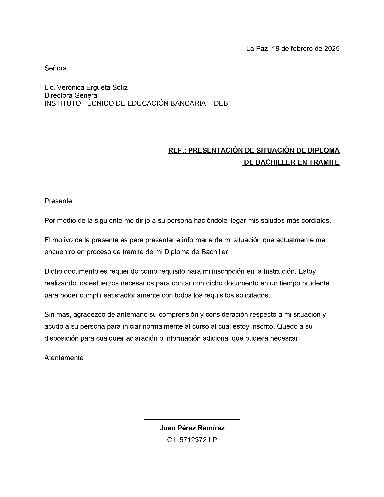

Redacción y Formato de Carta Formal
Alineaciones precisas, tabulaciones y sangrías
Objetivo de la Práctica
Aprender a estructurar una carta formal siguiendo las normas de redacción, manejando correctamente las alineaciones a la derecha para fechas y firmas.
Instrucciones Paso a Paso
1. Configuración del Documento
Prepara tu espacio de trabajo con los parámetros estándar:
- Abre un documento en blanco de Microsoft Word.
- Configura los márgenes en formato normal (2.5 cm arriba/abajo y 3.0 cm izquierda/derecha).
- Establece el tamaño de papel a Carta (Letter).
2. Alineaciones
Aplica alineaciones correctas para las partes clave de la carta:
- Fecha: Escribe el lugar y la fecha actual, y alínea el párrafo a la derecha.
- Encabezado: Mantén los datos del destinatario a la izquierda, en negrita.
- Cuerpo: Redacta un mensaje de al menos dos párrafos con alineación justificada.
- Despedida y Firma: Centra o alinea a la derecha el bloque de firma al final del documento.
3. Tabulaciones
- Práctica el uso de la tecla Tab para crear espacios uniformes si decides añadir una lista de documentos adjuntos al final.
Entregable
Guarda el documento como P02-CartaFormal-TuNombre.docx.
Resultado Esperado
Tu documento final debería lucir similar a esto:
